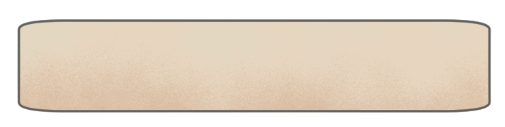

Mă numesc Irina Șușca și am creat acest joc pentru concursul „Istorie și societate în dimensiune virtuală”, la categoria web.
Proiectul își propune să ofere o introducere captivantă în universul fascinant al Japoniei,
într-un mod interactiv, accesibil și cât mai plăcut.
Toate ilustrațiile din joc sunt realizate de mine, cu excepția fundalurilor,
unde am ales să folosesc picturi autentice ale artiștilor japonezi din perioada desfășurăii acțiunii.
Am dezvoltat jocul folosind motorul Phaser 3.
Vă mulțumesc cu sinceritate pentru interesul acordat și pentru faptul că alegeți să vă aventurați în povestea mea.
